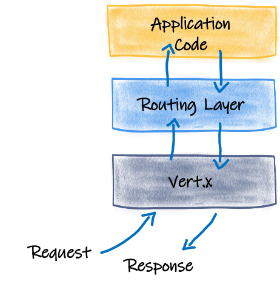
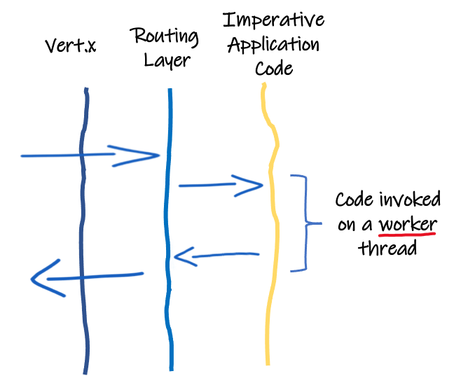
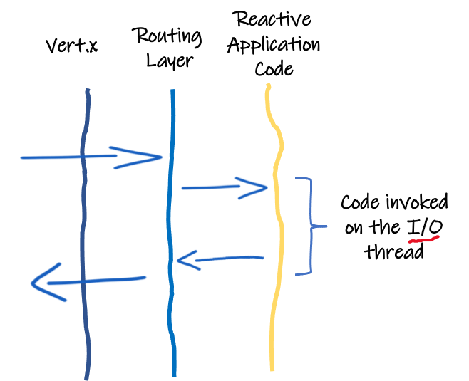

Quarkus - 响应式入门
了解如何使用Quarkus创建响应式应用程序，并探索Quarkus提供的不同响应式功能。 本指南涵盖：
-
快速浏览一下Quarkus引擎和它如何实现响应式
-
Mutiny的简要介绍 - Quarkus使用的响应式编程库
-
RESTEasy、RESTEasy Reactive 和 Reactive Routes 之间的区别
-
使用 RESTEasy Reactive 的响应式应用程序的引导
-
创建响应式 JAX-RS 端点（异步、流等）
-
使用响应式数据库访问
-
与其他响应式API交互
解决方案
我们建议您按照从 Bootstrapping project 开始的指示，一步一步地创建应用程序。
不过，您也可以直接进入完成的例子。
下载一个 存档或克隆git仓库：
git clone https://github.com/quarkusio/quarkus-quickstarts.git解决方案位于 getting-started-reactive 和 getting-started-reactive-crud 目录中。
Quarkus的多响应式方面特征
Quarkus是响应式的。如果您仔细观察，就会发现一个为Quarkus应用程序提供动力的响应式引擎。这个引擎就是Eclipse Vert.x (https://vertx.io)。所有网络I/O都通过非阻塞和响应性的 Vert.x 引擎。

让我们举两个例子来解释它是如何工作的。想象一个传入的HTTP请求。嵌入在Quarkus中的 (Vert.x) HTTP服务器接收请求，然后将其路由到应用程序。如果请求的目标是一个 imperative 方法（传统的JAX-RS，代码注释为 @Blocking…），路由层在 worker 线程中调用资源方法，并在数据可用时写入响应。到目前为止，还没有什么新的或突出的。下图描述了这种行为。在这种情况下，应用程序代码是在工作线程上调用的，而业务逻辑会阻塞该线程。

但是，如果HTTP请求的目标是一个响应式方法（JAX-RS使用RESTEasy响应式，响应式路由， @Incoming 方法没有注释 @Blocking…），路由层会在I/O线程上调用路由，这会带来很多好处，比如更高的并发性和性能：

因为Quarkus使用I/O线程来调用代码，所以我们节省了上下文切换，避免了大型线程池管理，从而提高了资源利用率。但是，代码必须 NOT 阻塞该线程。为什么？因为，I/O线程用于处理多个并发请求。一旦一个请求的处理因为需要执行一些I/O而无法进行，它就会调度这些I/O，并传递一个延续。它释放可以处理另一个请求的线程。当计划的I/O完成时，继续执行，返回到I/O线程。
因此，许多Quarkus组件在设计时都考虑了响应式，比如数据库访问（PostgreSQL, MySQL, Mongo等），应用服务（邮件，模板引擎等），消息传递（Kafka, AMQP等）等等。但是，要完全受益于此模型，应用程序代码应该以非阻塞的方式编写。这就是运用一个响应式API这个终极武器的地方。
Mutiny - 一个响应式编程库
Mutiny是一个响应式编程库，允许表达和组合异步动作。它提供两种类型：
-
io.smallrye.mutiny.Uni- 用于提供0或1结果的异步操作 -
io.smallrye.mutiny.Multi- 用于多条目(回压)流
这两种类型都是惰性的，并且遵循订阅模式。计算只在有实际需要时才开始（即订阅者登记）。
uni.subscribe().with(
result -> System.out.println("result is " + result),
failure -> failure.printStackTrace()
);
multi.subscribe().with(
item -> System.out.println("Got " + item),
failure -> failure.printStackTrace()
);`Uni` 和 `Multi` 都公开了事件驱动的API：你表达了在给定事件上你想做什么(成功，失败等)。这些API被分成组（操作类型），以使其更具表达性，并避免将100个方法附加到单个类上。主要的操作类型是对失败、完成、操作项、提取或收集它们作出反应。它提供了一种流畅的编码体验，具有可导航的API，并且结果不需要太多关于响应式的知识。
httpCall
.onFailure().recoverWithItem("my fallback");你可能想知道响应流 (https://www.reactive-streams.org/)。 Multi 实现了响应流 Publisher，因此实现了响应流回压机制。 Uni 没有实现 Publisher ，因为' Uni '的订阅足以表明你对结果感兴趣。由于响应流的订阅/请求仪式更加复杂，所以它再次考虑了更简单、更流畅的API。
拥抱来自Quarkus的响应和指令支柱的统一， Uni 和 Multi 都为指令式结构提供了桥梁。例如，你可以将 Multi 转换为 Iterable ，或者 await Uni 生成元素。
// Block until the result is available
String result = uni.await().indefinitely();
// Transform an asynchronous stream into a blocking iterable
stream.subscribe().asIterable().forEach(s -> System.out.println("Item is " + s));在这一点上，如果你是RxJava或Reactor的用户，你可能想知道如何使用你熟悉的 Flowable，Single，Flux，Mono… Mutiny允许从 Unis 和 Multis 到RX Java和Reactor类型的转换：
Maybe<String> maybe = uni.convert().with(UniRxConverters.toMaybe());
Flux<String> flux = multi.convert().with(MultiReactorConverters.toFlux());但是，Vert.x呢？Vert.x API也可以使用Mutiny类型。下面的代码片段展示了Vert.x Web 客户端的用法：
// Use io.vertx.mutiny.ext.web.client.WebClient
client = WebClient.create(vertx,
new WebClientOptions().setDefaultHost("fruityvice.com").setDefaultPort(443).setSsl(true)
.setTrustAll(true));
// ...
Uni<JsonObject> uni =
client.get("/api/fruit/" + name)
.send()
.onItem().transform(resp -> {
if (resp.statusCode() == 200) {
return resp.bodyAsJsonObject();
} else {
return new JsonObject()
.put("code", resp.statusCode())
.put("message", resp.bodyAsString());
}
});最后但并非最不重要的是，Mutiny内置了与MicroProfile上下文传播的集成，因此您可以在响应管道中传播事务、跟踪数据等。
说得够多了，我们动手吧！
创建项目
使用Quarkus实现响应式应用程序有几种方法。在本指南中，我们将使用RESTEasy Reactive，一个受益于Quarkus Reactive引擎的RESTEasy的实现。默认情况下，它调用I/O线程上的HTTP端点。
虽然可以使用_traditional_ RESTEasy，但需要添加 quarkus-resteasy-mutiny 扩展，该方法仍然会在 worker 线程上调用。因此，虽然它将使用响应式编程，但仍然需要工作线程，这与目的不符。
|
创建一个新的Quarkus项目最简单的方法是打开终端并运行以下命令：
对于Linux和macOS用户
mvn io.quarkus:quarkus-maven-plugin:1.11.7.Final:create \
-DprojectGroupId=org.acme \
-DprojectArtifactId=getting-started-reactive \
-DclassName="org.acme.getting.started.ReactiveGreetingResource" \
-Dpath="/hello" \
-Dextensions="resteasy-reactive"
cd getting-started-reactive对于Windows用户
-
如果使用cmd，（不要使用正斜杠
\）
mvn io.quarkus:quarkus-maven-plugin:1.11.7.Final:create -DprojectGroupId=org.acme -DprojectArtifactId=getting-started-reactive -DclassName="org.acme.getting.started.ReactiveGreetingResource" -Dpath="/hello" -Dextensions="resteasy-reactive"-
如果使用Powershell，请将
-D参数用双引号括起来
mvn io.quarkus:quarkus-maven-plugin:1.11.7.Final:create "-DprojectGroupId=org.acme" "-DprojectArtifactId=getting-started-reactive" "-DclassName=org.acme.getting.started.ReactiveGreetingResource" "-Dpath=/hello" "-Dextensions=resteasy-reactive"它会在 `./getting-started-reactive`中生成如下内容：
-
关于Maven结构
-
一个
org.acme.quickstart.ReactiveGreetingResource资源暴露/hello -
关联的单元测试
-
启动应用程序后，可在
http://localhost:8080上访问登录页面 -
示例
Dockerfile文件位于src/main/docker，用于native和jvm两种模式 -
应用程序配置文件
响应式 JAX-RS 资源
在项目创建过程中， src/main/java/org/acme/getting/started/ReactiveGreetingResource.java 文件已经创建了以下内容：
package org.acme.getting.started;
import javax.ws.rs.GET;
import javax.ws.rs.Path;
import javax.ws.rs.Produces;
import javax.ws.rs.core.MediaType;
@Path("/hello")
public class ReactiveGreetingResource {
@GET
@Produces(MediaType.TEXT_PLAIN)
public String hello() {
return "Hello RESTEasy Reactive";
}
}这是一个非常简单的REST端点，在 "/hello"上返回 "Hello RESTEasy Reactive" 请求。当它使用RESTEAsy响应式时，这个方法在I/O线程上被调用。
|
要让Quarkus在_worker_线程上调用这个方法，请使用 |
现在让我们创建一个 ReactiveGreetingService 类，包含以下内容：
package org.acme.getting.started;
import io.smallrye.mutiny.Multi;
import io.smallrye.mutiny.Uni;
import javax.enterprise.context.ApplicationScoped;
import java.time.Duration;
@ApplicationScoped
public class ReactiveGreetingService {
public Uni<String> greeting(String name) {
return Uni.createFrom().item(name)
.onItem().transform(n -> String.format("hello %s", n));
}
}然后，编辑 ReactiveGreetingResource 类，以匹配以下内容：
package org.acme.getting.started;
import javax.inject.Inject;
import javax.ws.rs.GET;
import javax.ws.rs.Path;
import javax.ws.rs.Produces;
import javax.ws.rs.core.MediaType;
import io.smallrye.mutiny.Multi;
import io.smallrye.mutiny.Uni;
import org.reactivestreams.Publisher;
@Path("/hello")
public class ReactiveGreetingResource {
@Inject
ReactiveGreetingService service;
@GET
@Produces(MediaType.TEXT_PLAIN)
@Path("/greeting/{name}")
public Uni<String> greeting(String name) {
return service.greeting(name);
}
@GET
@Produces(MediaType.TEXT_PLAIN)
public String hello() {
return "hello";
}
}ReactiveGreetingService 类包含一个生成 Uni 的简单方法。虽然在这个例子中，产生的条目是立即发出的，你可以想象任何异步API产生一个 Uni。我们将在本指南的后面讨论这个问题。
现在，使用以下命令启动应用程序：
./mvnw quarkus:dev运行后，通过打开 http://localhost:8080/hello/greeting/neo 检查您是否得到了预期的问候信息。
处理流
到目前为止，我们只返回一个异步结果。在本节中，我们使用传输多个条目的流来扩展应用程序。这些数据流可以来自Kafka或任何其他数据源，但为了简单起见，我们只生成周期性的问候消息。
在 ReactiveGreetingService 中，添加以下方法：
public Multi<String> greetings(int count, String name) {
return Multi.createFrom().ticks().every(Duration.ofSeconds(1))
.onItem().transform(n -> String.format("hello %s - %d", name, n))
.transform().byTakingFirstItems(count);
}
你可能需要添加 import io.smallrye.mutiny.Multi; 和 import java.time.Duration; 语句。
|
它每秒钟生成一条问候信息，并在 count 信息后停止。
在 ReactiveGreetingResource 中添加以下方法：
@GET
@Produces(MediaType.APPLICATION_JSON)
@Path("/greeting/{count}/{name}")
public Multi<String> greetings(int count, String name) {
return service.greetings(count, name);
}这个端点将项目以JSON数组的形式发送给客户端。消息的名称和数量用路径参数进行参数化。
所以调用端点会产生如下结果：
$ curl http://localhost:8080/hello/greeting/3/neo
["hello neo - 0", "hello neo - 1", "hello neo - 2"]我们也可以通过返回一个 Multi 来生成服务器发送的事件响应：
@GET
@Produces(MediaType.SERVER_SENT_EVENTS)
@RestSseElementType(MediaType.TEXT_PLAIN)
@Path("/stream/{count}/{name}")
public Multi<String> greetingsAsStream(int count, String name) {
return service.greetings(count, name);
}与前面代码片段唯一的区别是生成的类型和指示每个事件类型的 @RestSseElementType 注解。由于 @Produces 注解定义了 SERVER_SENT_EVENTS，JAX-RS需要它知道每个（嵌套）事件的内容类型。
你可能需要添加 import org.jboss.resteasy.reactive.RestSseElementType; 语句。
|
你可以使用以下命令看到结果：
$ curl -N http://localhost:8080/hello/stream/5/neo
data: hello neo - 0
data: hello neo - 1
data: hello neo - 2
data: hello neo - 3
data: hello neo - 4使用响应式 API
使用Quarkus响应式API
Quarkus使用Mutiny模型提供了许多响应式API。在本节中，我们将看到如何使用响应式PostgreSQL驱动程序以一种非阻塞和响应式的方式与数据库交互。
使用以下命令创建一个新项目：
mvn io.quarkus:quarkus-maven-plugin:1.11.7.Final:create \
-DprojectGroupId=org.acme \
-DprojectArtifactId=getting-started-reactive-crud \
-DclassName="org.acme.reactive.crud.FruitResource" \
-Dpath="/fruits" \
-Dextensions="resteasy-reactive,resteasy-reactive-jackson,reactive-pg-client"
cd getting-started-reactive-crud这个应用程序与一个PostgreSQL数据库交互，所以你需要一个：
docker run --ulimit memlock=-1:-1 -it --rm=true --memory-swappiness=0 \
--name postgres-quarkus-reactive -e POSTGRES_USER=quarkus_test \
-e POSTGRES_PASSWORD=quarkus_test -e POSTGRES_DB=quarkus_test \
-p 5432:5432 postgres:11.2然后，让我们配置数据源。打开 src/main/resources/application.properties 并添加以下内容：
quarkus.datasource.db-kind=postgresql
quarkus.datasource.username=quarkus_test
quarkus.datasource.password=quarkus_test
quarkus.datasource.reactive.url=postgresql://localhost:5432/quarkus_test
myapp.schema.create=true第3行定义数据源。最后一行将在应用程序中用于指示在应用程序初始化时是否插入一些条目。
现在，让我们创建 entity。创建 org.acme.reactive.crud.Fruit 类具有以下内容：
package org.acme.reactive.crud;
import io.smallrye.mutiny.Multi;
import io.smallrye.mutiny.Uni;
import io.vertx.mutiny.pgclient.PgPool;
import io.vertx.mutiny.sqlclient.Row;
import io.vertx.mutiny.sqlclient.RowSet;
import io.vertx.mutiny.sqlclient.Tuple;
import java.util.stream.StreamSupport;
public class Fruit {
public Long id;
public String name;
public Fruit() {
// default constructor.
}
public Fruit(String name) {
this.name = name;
}
public Fruit(Long id, String name) {
this.id = id;
this.name = name;
}
public static Multi<Fruit> findAll(PgPool client) {
return client.query("SELECT id, name FROM fruits ORDER BY name ASC").execute()
// Create a Multi from the set of rows:
.onItem().transformToMulti(set -> Multi.createFrom().items(() -> StreamSupport.stream(set.spliterator(), false)))
// For each row create a fruit instance
.onItem().transform(Fruit::from);
}
public static Uni<Fruit> findById(PgPool client, Long id) {
return client.preparedQuery("SELECT id, name FROM fruits WHERE id = $1").execute(Tuple.of(id))
.onItem().transform(RowSet::iterator)
.onItem().transform(iterator -> iterator.hasNext() ? from(iterator.next()) : null);
}
public Uni<Long> save(PgPool client) {
return client.preparedQuery("INSERT INTO fruits (name) VALUES ($1) RETURNING (id)").execute(Tuple.of(name))
.onItem().transform(pgRowSet -> pgRowSet.iterator().next().getLong("id"));
}
public Uni<Boolean> update(PgPool client) {
return client.preparedQuery("UPDATE fruits SET name = $1 WHERE id = $2").execute(Tuple.of(name, id))
.onItem().transform(pgRowSet -> pgRowSet.rowCount() == 1);
}
public static Uni<Boolean> delete(PgPool client, Long id) {
return client.preparedQuery("DELETE FROM fruits WHERE id = $1").execute(Tuple.of(id))
.onItem().transform(pgRowSet -> pgRowSet.rowCount() == 1);
}
private static Fruit from(Row row) {
return new Fruit(row.getLong("id"), row.getString("name"));
}
}这个 entity 包含一些字段和方法，用于从数据库中查找、更新和删除行。当检索到结果时，所生成的项被异步触发，这些方法返回 Unis 或 Multis 。注意，响应式PostgreSQL客户端已经提供了 Uni 和 Multi 实例。因此，您只需将来自数据库的结果转换为 business-friendly 对象。
为了在应用程序启动时初始化数据库，我们将创建一个名为 DBInit 的类，其内容如下：
package org.acme.reactive.crud;
import io.quarkus.runtime.StartupEvent;
import io.vertx.mutiny.pgclient.PgPool;
import org.eclipse.microprofile.config.inject.ConfigProperty;
import javax.enterprise.context.ApplicationScoped;
import javax.enterprise.event.Observes;
@ApplicationScoped
public class DBInit {
private final PgPool client;
private final boolean schemaCreate;
public DBInit(PgPool client, @ConfigProperty(name = "myapp.schema.create", defaultValue = "true") boolean schemaCreate) {
this.client = client;
this.schemaCreate = schemaCreate;
}
void onStart(@Observes StartupEvent ev) {
if (schemaCreate) {
initdb();
}
}
private void initdb() {
client.query("DROP TABLE IF EXISTS fruits").execute()
.flatMap(r -> client.query("CREATE TABLE fruits (id SERIAL PRIMARY KEY, name TEXT NOT NULL)").execute())
.flatMap(r -> client.query("INSERT INTO fruits (name) VALUES ('Kiwi')").execute())
.flatMap(r -> client.query("INSERT INTO fruits (name) VALUES ('Durian')").execute())
.flatMap(r -> client.query("INSERT INTO fruits (name) VALUES ('Pomelo')").execute())
.flatMap(r -> client.query("INSERT INTO fruits (name) VALUES ('Lychee')").execute())
.await().indefinitely();
}
}然后，让我们在 FruitResource 中使用这个 Fruit 类。编辑 FruitResource 类，匹配以下内容：
package org.acme.reactive.crud;
import java.net.URI;
import javax.ws.rs.Consumes;
import javax.ws.rs.DELETE;
import javax.ws.rs.GET;
import javax.ws.rs.POST;
import javax.ws.rs.PUT;
import javax.ws.rs.Path;
import javax.ws.rs.Produces;
import javax.ws.rs.core.MediaType;
import javax.ws.rs.core.Response;
import javax.ws.rs.core.Response.ResponseBuilder;
import javax.ws.rs.core.Response.Status;
import io.smallrye.mutiny.Multi;
import io.smallrye.mutiny.Uni;
import io.vertx.mutiny.pgclient.PgPool;
@Path("fruits")
@Produces(MediaType.APPLICATION_JSON)
@Consumes(MediaType.APPLICATION_JSON)
public class FruitResource {
private final PgPool client;
public FruitResource(PgPool client) {
this.client = client;
}
private void initdb() {
client.query("DROP TABLE IF EXISTS fruits").execute()
.flatMap(r -> client.query("CREATE TABLE fruits (id SERIAL PRIMARY KEY, name TEXT NOT NULL)").execute())
.flatMap(r -> client.query("INSERT INTO fruits (name) VALUES ('Kiwi')").execute())
.flatMap(r -> client.query("INSERT INTO fruits (name) VALUES ('Durian')").execute())
.flatMap(r -> client.query("INSERT INTO fruits (name) VALUES ('Pomelo')").execute())
.flatMap(r -> client.query("INSERT INTO fruits (name) VALUES ('Lychee')").execute())
.await().indefinitely();
}
@GET
public Multi<Fruit> get() {
return Fruit.findAll(client);
}
@GET
@Path("{id}")
public Uni<Response> getSingle(Long id) {
return Fruit.findById(client, id)
.onItem().transform(fruit -> fruit != null ? Response.ok(fruit) : Response.status(Status.NOT_FOUND))
.onItem().transform(ResponseBuilder::build);
}
@POST
public Uni<Response> create(Fruit fruit) {
return fruit.save(client)
.onItem().transform(id -> URI.create("/fruits/" + id))
.onItem().transform(uri -> Response.created(uri).build());
}
@PUT
@Path("{id}")
public Uni<Response> update(Long id, Fruit fruit) {
return fruit.update(client)
.onItem().transform(updated -> updated ? Status.OK : Status.NOT_FOUND)
.onItem().transform(status -> Response.status(status).build());
}
@DELETE
@Path("{id}")
public Uni<Response> delete(Long id) {
return Fruit.delete(client, id)
.onItem().transform(deleted -> deleted ? Status.NO_CONTENT : Status.NOT_FOUND)
.onItem().transform(status -> Response.status(status).build());
}
}这个资源根据 Fruit 类产生的结果返回 Uni 和 Multi 实例。
使用 Vert.x 客户端
前面的示例使用了Quarkus提供的_service_。同样，你也可以直接使用Vert.x客户端。
首先，确保存在 quarkus-vertx 扩展。如果没有激活扩展，请执行如下命令来激活：
mvn io.quarkus:quarkus-maven-plugin:1.11.7.Final:add-extensions \
-Dextensions=vertx或者手动将 quarkus-vertx 添加到依赖项中。
<dependency>
<groupId>io.quarkus</groupId>
<artifactId>quarkus-vertx</artifactId>
</dependency>有一个Mutiny 版本的Vert.x的API。这个API被分为几个可以独立导入的工件：
| 项目包名:工程名 | 描述 |
|---|---|
|
Mutiny API for Vert.x Core |
|
Mutiny API for the Vert.x Mail Client |
|
Mutiny API for the Vert.x Web Client |
|
Mutiny API for the Vert.x Mongo Client |
|
Mutiny API for the Vert.x Redis Client |
|
Mutiny API for the Vert.x Cassandra Client |
|
Mutiny API for the Vert.x Consul Client |
|
Mutiny API for the Vert.x Kafka Client |
|
Mutiny API for the Vert.x AMQP Client |
|
Mutiny API for the Vert.x RabbitMQ Client |
您还可以在 http://smallrye.io/smallrye-reactive-utils/apidocs/ 上查看可用的API。
我们举个例子。添加以下依赖到你的应用程序：
<dependency>
<groupId>io.smallrye.reactive</groupId>
<artifactId>smallrye-mutiny-vertx-web-client</artifactId>
</dependency>它提供了Vert.x Web客户端的Mutiny API。然后，您可以使用如下web客户端：
package org.acme.vertx;
import io.smallrye.mutiny.Uni;
import io.vertx.core.json.JsonObject;
import io.vertx.ext.web.client.WebClientOptions;
import io.vertx.mutiny.core.Vertx;
import io.vertx.mutiny.ext.web.client.WebClient;
import org.jboss.resteasy.annotations.jaxrs.PathParam;
import javax.annotation.PostConstruct;
import javax.inject.Inject;
import javax.ws.rs.GET;
import javax.ws.rs.Path;
import javax.ws.rs.Produces;
import javax.ws.rs.core.MediaType;
@Path("/fruit-data")
public class ResourceUsingWebClient {
@Inject
Vertx vertx;
private WebClient client;
@PostConstruct
void initialize() {
this.client = WebClient.create(vertx,
new WebClientOptions().setDefaultHost("fruityvice.com").setDefaultPort(443).setSsl(true)
.setTrustAll(true));
}
@GET
@Produces(MediaType.APPLICATION_JSON)
@Path("/{name}")
public Uni<JsonObject> getFruitData(@PathParam("name") String name) {
return client.get("/api/fruit/" + name)
.send()
.map(resp -> {
if (resp.statusCode() == 200) {
return resp.bodyAsJsonObject();
} else {
return new JsonObject()
.put("code", resp.statusCode())
.put("message", resp.bodyAsString());
}
});
}
}有两点很重要：
-
注入的 Vert.x 实例是
io.vertx.mutiny.core.Vertx类型，它是 Vert.x 的 Mutiny 变量； -
Web客户端是从
io.vertx.mutiny.ext.web.client.WebClient创建的。
Mutiny 版本的 Vert.x API 还提供：
-
andAwait方法，例如sendAndAwait。andAwait表示调用方线程被阻塞，直到结果可用。注意不要用这种方式阻塞事件循环/ IO线程。 -
andForget方法，如writeAndForget。andForget可用于返回Uni的方法。andForget表示你不需要结果的Uni来表示操作的成功或失败。但是请记住，如果您不订阅，操作将不会被触发。andForget为您管理这个和管理订阅。 -
toMulti方法允许将一个 Vert.xReadStream转换为Multi -
toBlockingIterable/toBlockingStream方法允许转换Vert.xReadStream写入阻塞的可迭代对象或阻塞的java.util.Stream
使用 RxJava 或 Reactor API
Mutiny提供工具来将 RxJava 2 和 Project Reactor 类型转换为 Uni 和 Multi。
RxJava 2转换器有以下依赖项：
<dependency>
<groupId>io.smallrye.reactive</groupId>
<artifactId>mutiny-rxjava</artifactId>
</dependency>因此，如果你有一个返回RxJava 2类型 (Completable, Single, Maybe, Observable, Flowable) 的API，你可以创建 Unis 和 Multis ，如下所示：
import io.smallrye.mutiny.converters.multi.MultiRxConverters;
import io.smallrye.mutiny.converters.uni.UniRxConverters;
// ...
Uni<Void> uniFromCompletable = Uni.createFrom().converter(UniRxConverters.fromCompletable(), completable);
Uni<String> uniFromSingle = Uni.createFrom().converter(UniRxConverters.fromSingle(), single);
Uni<String> uniFromMaybe = Uni.createFrom().converter(UniRxConverters.fromMaybe(), maybe);
Uni<String> uniFromEmptyMaybe = Uni.createFrom().converter(UniRxConverters.fromMaybe(), emptyMaybe);
Uni<String> uniFromObservable = Uni.createFrom().converter(UniRxConverters.fromObservable(), observable);
Uni<String> uniFromFlowable = Uni.createFrom().converter(UniRxConverters.fromFlowable(), flowable);
Multi<Void> multiFromCompletable = Multi.createFrom().converter(MultiRxConverters.fromCompletable(), completable);
Multi<String> multiFromSingle = Multi.createFrom().converter(MultiRxConverters.fromSingle(), single);
Multi<String> multiFromMaybe = Multi.createFrom().converter(MultiRxConverters.fromMaybe(), maybe);
Multi<String> multiFromEmptyMaybe = Multi.createFrom().converter(MultiRxConverters.fromMaybe(), emptyMaybe);
Multi<String> multiFromObservable = Multi.createFrom().converter(MultiRxConverters.fromObservable(), observable);
Multi<String> multiFromFlowable = Multi.createFrom().converter(MultiRxConverters.fromFlowable(), flowable);你也可以将 Unis 和 Multis 转换成 RxJava 类型：
Completable completable = uni.convert().with(UniRxConverters.toCompletable());
Single<Optional<String>> single = uni.convert().with(UniRxConverters.toSingle());
Single<String> single2 = uni.convert().with(UniRxConverters.toSingle().failOnNull());
Maybe<String> maybe = uni.convert().with(UniRxConverters.toMaybe());
Observable<String> observable = uni.convert().with(UniRxConverters.toObservable());
Flowable<String> flowable = uni.convert().with(UniRxConverters.toFlowable());
// ...
Completable completable = multi.convert().with(MultiRxConverters.toCompletable());
Single<Optional<String>> single = multi.convert().with(MultiRxConverters.toSingle());
Single<String> single2 = multi.convert().with(MultiRxConverters
.toSingle().onEmptyThrow(() -> new Exception("D'oh!")));
Maybe<String> maybe = multi.convert().with(MultiRxConverters.toMaybe());
Observable<String> observable = multi.convert().with(MultiRxConverters.toObservable());
Flowable<String> flowable = multi.convert().with(MultiRxConverters.toFlowable());项目 Reactor 转换器在以下依赖项中可用：
<dependency>
<groupId>io.smallrye.reactive</groupId>
<artifactId>mutiny-reactor</artifactId>
</dependency>那么如果你有一个API返回 Reactor 类型 (Mono, Flux)，你可以创建 Unis 和 Multis 如下：
import io.smallrye.mutiny.converters.multi.MultiReactorConverters;
import io.smallrye.mutiny.converters.uni.UniReactorConverters;
// ...
Uni<String> uniFromMono = Uni.createFrom().converter(UniReactorConverters.fromMono(), mono);
Uni<String> uniFromFlux = Uni.createFrom().converter(UniReactorConverters.fromFlux(), flux);
Multi<String> multiFromMono = Multi.createFrom().converter(MultiReactorConverters.fromMono(), mono);
Multi<String> multiFromFlux = Multi.createFrom().converter(MultiReactorConverters.fromFlux(), flux);你也可以将 Unis 和 Multis 转换为 Reactor 类型：
Mono<String> mono = uni.convert().with(UniReactorConverters.toMono());
Flux<String> flux = uni.convert().with(UniReactorConverters.toFlux());
Mono<String> mono2 = multi.convert().with(MultiReactorConverters.toMono());
Flux<String> flux2 = multi.convert().with(MultiReactorConverters.toFlux());使用CompletionStages或Publisher API
如果你面对的是使用 CompletionStage, CompletableFuture 或 Publisher 的API，你可以来回转换。首先， Uni 和 Multi 都可以从 CompletionStage 或 `Supplier<CompletionStage>`创建。例如：
CompletableFuture<String> future = Uni
// Create from a Completion Stage
.createFrom().completionStage(CompletableFuture.supplyAsync(() -> "hello"));在 Uni 上，你也可以使用 subscribeAsCompletionStage() 来产生一个 CompletionStage 。 CompletionStage 会获得由 Uni 发出的条目或失败。
你也可以使用 createFrom().publisher(Publisher) 从 Publisher 的实例中创建 Unis 和 Multis 。你可以使用 toMulti 将 Uni 转换为 Publisher 。事实上， Multi 实现了 Publisher。